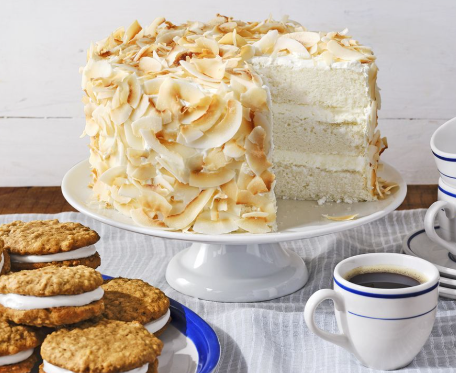

Coconut Angel Cake

Ingredients
For the cake:
*Cooking spray
*3 c. cake flour, spooned and leveled
*1 3/4 c. granulated sugar
*4 1/2 tsp. baking
powder
*1/2 tsp. kosher salt
*5 large egg whites
*1 (13.66-ounce) can unsweetened coconut milk, divided
*1 c. (2 sticks) unsalted butter, at room temperature
For the frosting:
*1 (8-ounce) package cream cheese, at room temperature
*1/4 c. confectioners' sugar
*2 c. heavy cream, chilled and divided
Directions
*Step 1 - Make cake: Preheat oven to 350°F. Coat three 8-inch round cake pans with nonstick cooking spray and line with parchment paper; coat parchment. Whisk together flour, sugar, baking powder, and salt in a bowl. Gently whisk together egg whites and 1/2 cup coconut milk until frothy in a second bowl.
*Step 2 - Beat butter with an electric mixer on medium speed until smooth, 1 to 2 minutes. Gradually beat in remaining 1 cup coconut milk a little at a time, beating until light and fluffy, 2 to 3 minutes. Decrease mixer to low and add flour mixture and egg white mixture in three additions, beginning and ending with flour mixture, just until incorporated.
*Step 3 - Transfer batter to prepared pans, dividing evenly (about 2 cups each). Bake until a toothpick inserted into centers comes out clean, 25 to 28 minutes. Cool in pans on wire racks, 10 minutes. Turn out onto wire racks to cool completely.
*Step 4 - Make frosting and decorate: Whisk cream cheese and sugar with an electric mixer on medium speed until smooth, 2 to 4 minutes. Gradually add 1 cup cream until incorporated. Beat until stiff peaks form, 1 to 2 minutes.
*Step 5 - Place one cake layer on a cake stand or plate. Top with half of frosting. Repeat one more time, then top with remaining layer.
*Step 6 - Just before serving, whisk remaining 1 cup cream with an electric mixer on medium speed until stiff peaks form, 1 to 2 minutes. Frost top and sides of cake with whipped cream, then cover with toasted coconut.